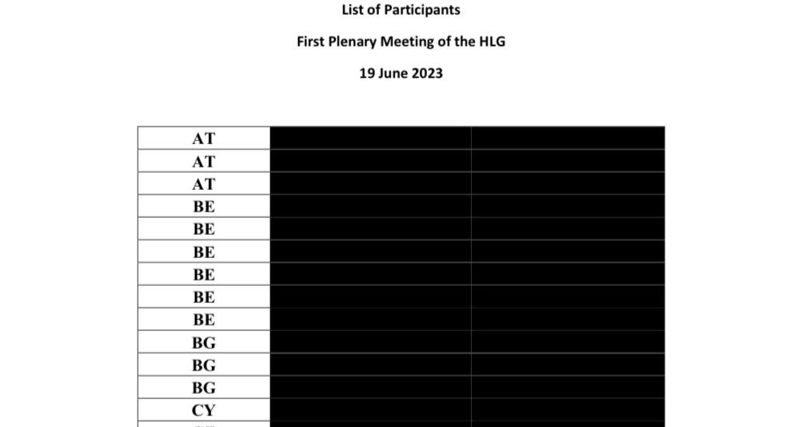
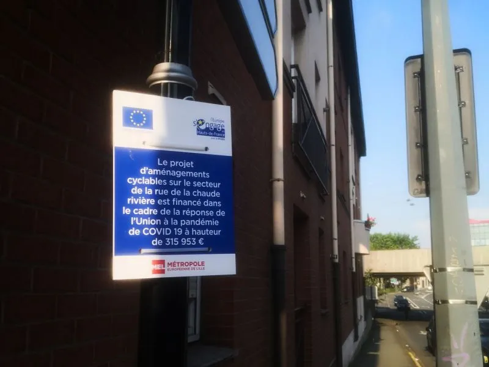

(Sven Franck, ) Jürgen Habermas bedauert, dass eine weitergehende politische Integration, zumindest im Kern der Europäischen Union, noch nie so entscheidend war wie heute - und noch nie so unwahrscheinlich." Ich halte mich an Dylan Thomas and "don't go gentle into the good night".Artikel lesen.
Warum kann Trump EU-Gesetze vorschlagen, aber nicht das Parlament?
(Sven Franck, ) Der Omnibus der EU Kommission zeigt, wer in Europa Einfluß hat. Wenn wir Unterschriften sammeln professionalisieren, könnten wir mit ECI's Paroli bieten.Artikel lesen.
Europäische Demokratie: Wie soll die funktionieren?
(Sven Franck, ) Ich versuche aktuell den ersten Mitgliederantrag auf die Tagesordnung der Volt-Europa-Generalversammlung zu setzen. Das bedeutet über grenzübergreifend Kampagne zu machen wie eine europäische Demokratie funktionieren könnte.Artikel lesen.
Europäischer Groundhog Day: Werden wir jemals aufwachen?
(Sven Franck, ) Ob Europa-Enthusiast oder Teil der Bevölkerung, die der Ansicht sind, dass mehr Europa mittlerweile schon gerechtfertigt ist – man kommt nicht umhin, festzustellen, dass wir uns in einem europäischen Groundhog day befinden.Artikel lesen.
(Sven Franck, ) Giorgia Meloni wollte sich beim jüngsten Rimini-Meeting nicht die Show stehlen lassen. Im Gegensatz zu Mario Draghi, der für europäische Integration plädierte, schlug sie ein "Europa der Nationen" vor. Den Bock zum Gärtner machen hat ja schon immer gut funktioniert.Artikel lesen.

Chat Control: Weg mit dem Briefgeheimnis!
(Sven Franck, ) Auch wenn 72% der europäischen Bevölkerung dagegen sind, könnte die Totalüberwachung unserer digitalen Kommunikation bald Realität werden. Kann man ja auch gleich das Briefgeheimnis abschaffen.Artikel lesen.
Rede zur Lage der Europäischen Union: Schluss mit Schönreden
(Sven Franck, ) Über den Gipfel im Weißen Haus ist alles gesagt, aber wenn eines nach NATO-Gipfel, US-EU-Handelsabkommen und dem vergangenen Wochenende klar ist, dann dass die EU ernsthaft Reformen angehen muss.Artikel lesen.
Ein Fork der EU
(Sven Franck, ) Egal wie eine zukünftige Europäische Union aussehen soll, jede Änderung der Verträge erfordert Einstimmigkeit. Warum nicht wie in Software einen Fork der EU für Verhandlungsspielraum nutzen?Artikel lesen.
EU Budget: Pfennigfuchsen statt großer Sprünge?
(Sven Franck, ) Gestern hat Kommissionspräsidentin Ursula von der Leyen den Rahmen für das neue EU Budget (MFF) vorgestellt, dass in den nächsten 24 Monaten verhandelt wird. Es geht um 1.984 Billionen € oder 1.26% vom Bruttonationaleinkommen. Eigentlich müsste es um viel mehr gehen.Artikel lesen.
Innovation oder Bürokratie?
(Sven Franck, ) Vor ein paar Monaten habe ich ein Projekt beim Europäischen Verteidigungsfonds eingereicht. Unser Konsortium aus KMUs hat die Qualitätsbewertung mit exzellenter Punktzahl für Innovation bestanden. Da aber nur ein Projekt finanziert wird und nicht das beste Projekt waren, war unser Projekt "good for funding" aber ohne Finanzierung.Artikel lesen.
Motion of Censure: Die Kommissionspräsidentin dekommissionieren?
(Sven Franck, ) Letzte Woche hat ein romänischer Europaabegordneter aus der konservativen ECR Gruppe eine Motion of Censure gegen die Kommissionspräsidentin Ursula von der Leyen und ihre Rolle im Pfizergate-skandal sowie die Einmischung in nationale Wahlen beantragt. Spannung.Artikel lesen.
Grenzkontrollen sind wie nationale Parteien
(Sven Franck, ) Dieses Wochende bin ich per Bus von Ljubljana nach München gefahren um meinen Zug nach Utrecht zu erwischen. Leider haben die illegalen Grenzkontrollen von Deutschland und jetzt auch Österreich kurzen Prozess mit meinen Reiseplänen gemacht.Artikel lesen.
5% für die NATO
(Sven Franck, ) Es it NATO Gipfel und Mark Rutte hat schon das Ergebnis vor jeder Diskussion in einer poetischen Nachricht beschlossen: Wir geben ab jetzt 5% vom BIP für Verteidigung aus - erheblich mehr als die 2% pro Jahr, zu denen sich NATO Mitglieder verpflichtet haben.Artikel lesen.
Wir brauchen einen Trilog für europäische Außenpolitik
(Sven Franck, ) Vor kurzem habe ich eine Rede von Jeffrey Sachs im Europaparlament gesehen in der kritisierte, dass die EU immer noch keine Doktrin für eine europäische Außenpolitik hat. Dem kann ich nur zustimmen.Artikel lesen.
Schengen: Freiheit für Bürger oder menschliche Ressourcen?
(Sven Franck, ) Schengen hat Geburtstag! Am 14. Juni 1985 wurde das Abkommen zur Abschaffung innereuropäischer Grenzen beschlossen. 40 Jahre später sind 29 Länder in der Schengenzone: die EU ohne Zypern und Irland, dafür mit der Schweiz, Norwegen, Lichtenstein und Island.Artikel lesen.
EU: Gut fürs Geschäft?
(Sven Franck, ) Vor kurzem habe ich eine Diskussion im US Fernsehen zu Trumps Zollachterbahn gesehen. Ein Satz blieb mir im Gedächtnis: Amerika hat die Ideen, China die Fabriken und Europa... nur Regulierung. Artikel lesen.
Warum nicht das Lieblingsthema der Rechtsextremen stehlen?
(Sven Franck, ) Mal wieder vorgezogene Wahlen. Diesmal hat Geerd Wilder die rechtskonservative Koalition in Holland platzen lassen, weil sie seine "0 Asyl" Politik nicht mittragen wollte. In ein paar Monaten reden wir wieder über... Migration. Immer noch?Artikel lesen.

40 Jahre Marketing mit einer Flagge?
(Sven Franck, ) Gestern vor 39 Jahren, am 29.05.1986 wurde die Europäische Flagge offiziel eingeweiht. Auf Facebook schrieb ein Magazin aus gegebenem Anlass über Europäische Identität... und erntete einen Shitstorm, WTF ist Europäische Identität?Artikel lesen.
Nationaler Bürokratiewahnsinn
(Sven Franck, ) 9:00 Morgens. Post von der slowenischen Einwanderungsbehörde. Nach sechs Monaten bemerkt jemand, dass eine Bescheinung der Krankenversicherung fehlt. Ja, aber...Artikel lesen.
Sollte die EU die sozialen Medien abschalten?
(Sven Franck, ) Die öffentliche Befragung zu Europa's zukünftigem Schutzschild für Demokratie ist kurz vor dem Ende und trotz hohem Hintegrundlärm aus der Slowakei ist es dringend, unsere demokratischen Systeme resilienter zu machen.Artikel lesen.
Super, 9. Mai...
(Sven Franck, ) Europe day, super! üá™üá∫ Es ist schon eine Weile her, dass ich geschrieben habe, ganz Europa ist 24 Stunden europ√§isch, bevor es zur√ºck zum Nationalismus geht. Und es ist immer noch so.Artikel lesen.
Wo zum Teufel ist Europa?
(Sven Franck, ) Die Börsenkurse weltweit brennen maga-rot, nachdem US-Präsident Trump die Zollkeule ausgepackt hat, um sich dann, Nero lässt grüßen, zum Golf-Wochenende zu verabschieden. China reagiert mit Gegenmaßnahmen. Die Europäische Union reagiert gar nicht. Mal wieder… Artikel lesen.
Wie Grönland den Weihnachtsmann vom europäischen Blau überzeugte
(Sven Franck, ) Grönland hat die Familie Vance versetzt, um den Weihnachtsmann zu überzeugen, seine Garderobe von “Maga-Rot” auf “EU-Blau” zu wechseln. Nach dem “Thumbs up” vom Nordpol soll eine Petition Schokoladenhersteller und Einzelhändler überzeugen, sich der symbolischen Geste anzuschließen. Artikel lesen.
Zölle: Warum ein Nullsummenspiel?
(Sven Franck, ) Die USA haben ernst gemacht und 25% Einfuhrzölle auf Stahl und Aluminium aus Europa verhängt. Die Frage ist, was ist Europas “end game”? Weil “Auge um Auge” heißt nicht, dass Europa sich ein Auge ausstechen muss, nur weil Amerika es vormacht.Artikel lesen.
Fakten. Fakten. Fakten.
(Sven Franck, ) Wahrheit und Verlässlichkeit sind in der heutigen Welt Mangelware. Je mehr Chaos Trump erzeugt, desto mehr muss sich Europa profilieren - nicht nur hinsichtlich der Verteidigung von europäischen Grenzen und Werten, sondern auch als Bastion von Wahrheit und Fakten in einer Welt voller Fiktion und Lügen.Artikel lesen.
Qual der Wahl? Volt wählen!
(Sven Franck, ) Seit Maastricht haben es Regierungen versäumt, die EU signikant weiter zu entwicklen und zu der föderalen Institution aufzubauen, die wir heute benötigen. Warum soll es nach dem 23.02 anders sein?Artikel lesen.
MEGA, MAGA, GAGA?
(Sven Franck, ) Extrem-rechte Parteien inszenieren seit langem “Migration” als das polarisierende Thema, um Wahlen zu gewinnen. Warum nicht die Strategie kopieren und die Präsidentschaft Trumps nutzen, um den „American Way of Life“ und die wahren Ziele von Meloni, Weidel, Orban & Co. zu hinterfragen.Artikel lesen.
Bananen? Gebogen. Deckel? Fixiert. Soziale Medien: Bitte hier lang!
(Sven Franck, ) Die negativen Auswirkungen sozialer Medien stellen deren Vorzüge schon lange vor dem Amtsantritt Donald Trumps in den Schatten. Wie bei Fast Food hätte die Europäische Kommission die regulatorischen Mittel, um Bürger zu schützen. Sie könnte die europäische Online-Welt zu einem besseren Ort machen. Es wird höchste Zeit.Artikel lesen.
Warum Kalifornien der EU beitreten sollte
(Sven Franck, ) Die EU sollte Donald Trumps Ambitionen nicht nur mit dem regulatorischen Werkzeugkasten beantworten. Ein vereintes Europa muss auch andere Wege gehen, um die öffentliche Meinung zu Hause und jenseits von Europa zu beeinflussen.Artikel lesen.
Alice im Wunderland
(Sven Franck, ) "Alice für Deutschland" oder "Alice im Wunderland" - auf der Reise durch das Deutschland frei nach dem Wahlprogramm der AfD.Artikel lesen.
Neujahrswünsche: mehr Europa, weniger Plastikverschlüsse
(Sven Franck, ) Wenn ich mir den selbstgefälligen Beitrag der EU Kommission zum USB-C Stecker sehe während ich an dem Plastikdeckel meiner Wasserflasche pule, kann ich nicht anders als mich zu fragen: Mußt Du nicht mehr können, Europa, als Plastikverschlüsse?Artikel lesen.
2024
Warum eine Stimme aus Überzeugung eine nützliche Stimme ist
(Sven Franck, ) Am 09. Juni werde ich für Europe Territoires Écologie stimmen: weil dies die einzige Chance für die Linke ist, 2027 eine Mehrheit zu bilden, und weil Volt Frankreich Teil dieser Liste ist.Artikel lesen.
Eine neue Regierung für eine neues Kartenhaus?
(Sven Franck, ) Die Europawahlen bieten eine Chance, den Stillstand unseres politischen Systems zu durchbrechen - indem man für kleine Parteien wie Volt France stimmt.Artikel lesen.
Seien wir offen: Einwanderer leisten einen wertvollen Beitrg für unsere Wirtschaft
(Sven Franck, ) Unsere Wirtschaft hängt von der Einwanderung ab, und unsere Vielfalt könnte einer der größten Vorteile Frankreichs sein.Artikel lesen.
SOTEU 2023 - Auf der Stelle treten
(Sven Franck, ) In ihrer SOTEU 2023-Rede hat Ursula von der Leyen eine Fülle von Themen angesprochen, aber nur oberflächliche Maßnahmen vorgeschlagen, anstatt das europäische Projekt voranzubringen.Artikel lesen.
Warum kein Mißtrauensvotum gegen die Europäische Kommission?
(Sven Franck, ) Die kürzliche Ernennung von Fiona Scott Morton, einer US-Bürgerin und Lobbyistin für Apple, Amazon und Microsoft, zur Chefökonomin der Generaldirektion Wettbewerb der Europäischen Kommission wird bei den Europawahlen 2024 die extreme Rechte in ganz Europa beflügeln.Artikel lesen.
Warum gibt es keine Avengers in der Politik?
(Sven Franck, ) Ein Jahr vor den Europawahlen und während die meisten Blicke bereits auf das Jahr 2027 gerichtet sind, beginnt die französische Politik erneut mit ihrer endlosen Suche nach dem Äquivalent von "The Voice" - der Persönlichkeit, die das Land vereinen und zu seinem quintessenziellen Führer werden wird - in Theorie.Artikel lesen.


![Die Avengers der Politik [Graphic von Midjourney]](../img/FR-Graphic-Avengers-Politique.webp)